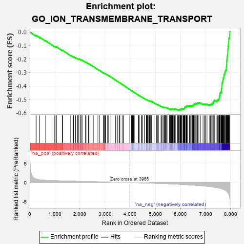
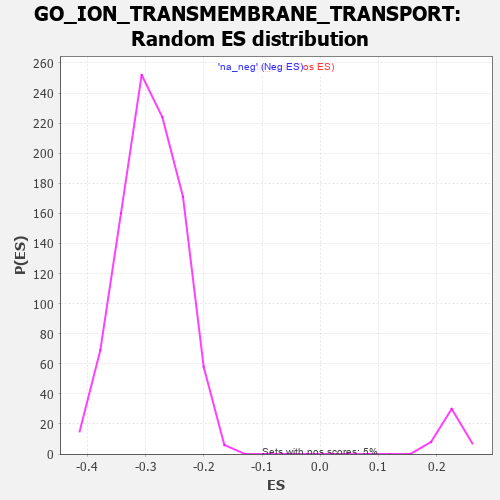

| | | Dataset | 7d |
| Phenotype | NoPhenotypeAvailable |
| Upregulated in class | na_neg |
| GeneSet | GO_ION_TRANSMEMBRANE_TRANSPORT |
| Enrichment Score (ES) | -0.58020973 |
| Normalized Enrichment Score (NES) | -1.9894805 |
| Nominal p-value | 0.0 |
| FDR q-value | 0.0024371974 |
| FWER p-Value | 0.008 |
Table: GSEA Results Summary

Fig 1: Enrichment plot: GO_ION_TRANSMEMBRANE_TRANSPORT
Profile of the Running ES Score & Positions of GeneSet Members on the Rank Ordered List
| PROBE | GENE SYMBOL | GENE_TITLE | RANK IN GENE LIST | RANK METRIC SCORE | RUNNING ES | CORE ENRICHMENT | | 1 | THADA | | | 253 | 0.931 | -0.0259 | No |
| 2 | BAX | | | 387 | 0.711 | -0.0380 | No |
| 3 | KCND2 | | | 617 | 0.590 | -0.0633 | No |
| 4 | COX10 | | | 990 | 0.485 | -0.1077 | No |
| 5 | AKT1 | | | 1040 | 0.476 | -0.1106 | No |
| 6 | MEF2C | | | 1054 | 0.473 | -0.1089 | No |
| 7 | PARL | | | 1290 | 0.432 | -0.1361 | No |
| 8 | KCNH7 | | | 1305 | 0.427 | -0.1349 | No |
| 9 | ABCB8 | | | 1631 | 0.369 | -0.1741 | No |
| 10 | JPH1 | | | 1741 | 0.347 | -0.1856 | No |
| 11 | SLMAP | | | 1744 | 0.346 | -0.1834 | No |
| 12 | FMR1 | | | 1816 | 0.334 | -0.1902 | No |
| 13 | GLRA2 | | | 1892 | 0.321 | -0.1976 | No |
| 14 | CUL5 | | | 1947 | 0.314 | -0.2023 | No |
| 15 | MCUR1 | | | 1953 | 0.313 | -0.2007 | No |
| 16 | MICU1 | | | 1954 | 0.313 | -0.1985 | No |
| 17 | RAF1 | | | 2011 | 0.303 | -0.2036 | No |
| 18 | KCNC2 | | | 2075 | 0.295 | -0.2096 | No |
| 19 | LRRC7 | | | 2080 | 0.294 | -0.2080 | No |
| 20 | GRIK3 | | | 2224 | 0.272 | -0.2245 | No |
| 21 | COX15 | | | 2238 | 0.270 | -0.2243 | No |
| 22 | ANO6 | | | 2339 | 0.255 | -0.2353 | No |
| 23 | COX7C | | | 2356 | 0.252 | -0.2356 | No |
| 24 | SPG7 | | | 2525 | 0.223 | -0.2556 | No |
| 25 | PHB2 | | | 2712 | 0.197 | -0.2781 | No |
| 26 | MAGT1 | | | 2780 | 0.186 | -0.2854 | No |
| 27 | ERO1A | | | 2925 | 0.162 | -0.3028 | No |
| 28 | CLCN7 | | | 2931 | 0.161 | -0.3023 | No |
| 29 | ANO1 | | | 2982 | 0.152 | -0.3077 | No |
| 30 | ISCU | | | 2989 | 0.151 | -0.3074 | No |
| 31 | COX17 | | | 3019 | 0.147 | -0.3101 | No |
| 32 | CHP1 | | | 3089 | 0.138 | -0.3180 | No |
| 33 | WWP1 | | | 3127 | 0.133 | -0.3218 | No |
| 34 | KCNN1 | | | 3196 | 0.123 | -0.3296 | No |
| 35 | KCNK1 | | | 3413 | 0.088 | -0.3568 | No |
| 36 | CDK5 | | | 3480 | 0.080 | -0.3647 | No |
| 37 | SURF1 | | | 3558 | 0.066 | -0.3741 | No |
| 38 | CHERP | | | 3587 | 0.062 | -0.3773 | No |
| 39 | ABCD1 | | | 3677 | 0.047 | -0.3884 | No |
| 40 | COX5A | | | 3738 | 0.036 | -0.3959 | No |
| 41 | GLRA1 | | | 3957 | 0.001 | -0.4239 | No |
| 42 | CLIC6 | | | 4037 | -0.014 | -0.4339 | No |
| 43 | ATG5 | | | 4051 | -0.016 | -0.4355 | No |
| 44 | KCNT2 | | | 4081 | -0.021 | -0.4391 | No |
| 45 | PDE4B | | | 4089 | -0.022 | -0.4398 | No |
| 46 | MTOR | | | 4114 | -0.025 | -0.4427 | No |
| 47 | ABL1 | | | 4125 | -0.027 | -0.4438 | No |
| 48 | WNK3 | | | 4153 | -0.034 | -0.4471 | No |
| 49 | UNC79 | | | 4184 | -0.039 | -0.4506 | No |
| 50 | STAC | | | 4327 | -0.064 | -0.4684 | No |
| 51 | OPA1 | | | 4330 | -0.065 | -0.4682 | No |
| 52 | ADRB2 | | | 4352 | -0.068 | -0.4704 | No |
| 53 | TMCO1 | | | 4451 | -0.085 | -0.4824 | No |
| 54 | KCNQ4 | | | 4452 | -0.085 | -0.4818 | No |
| 55 | JPH3 | | | 4481 | -0.091 | -0.4848 | No |
| 56 | MICU3 | | | 4571 | -0.110 | -0.4955 | No |
| 57 | OSTM1 | | | 4632 | -0.125 | -0.5023 | No |
| 58 | LETM1 | | | 4644 | -0.127 | -0.5028 | No |
| 59 | NMUR2 | | | 4646 | -0.127 | -0.5020 | No |
| 60 | ITPR1 | | | 4661 | -0.130 | -0.5029 | No |
| 61 | CLCN3 | | | 4678 | -0.134 | -0.5040 | No |
| 62 | CRBN | | | 4695 | -0.138 | -0.5051 | No |
| 63 | CNNM4 | | | 4738 | -0.147 | -0.5095 | No |
| 64 | LASP1 | | | 4767 | -0.151 | -0.5120 | No |
| 65 | PLCG1 | | | 4770 | -0.151 | -0.5112 | No |
| 66 | MYO5A | | | 4787 | -0.155 | -0.5122 | No |
| 67 | P2RX4 | | | 4813 | -0.161 | -0.5142 | No |
| 68 | WDR1 | | | 4824 | -0.163 | -0.5144 | No |
| 69 | ABCD3 | | | 4829 | -0.164 | -0.5137 | No |
| 70 | SGK1 | | | 4852 | -0.168 | -0.5154 | No |
| 71 | DLG1 | | | 4860 | -0.169 | -0.5151 | No |
| 72 | COX5B | | | 4980 | -0.194 | -0.5290 | No |
| 73 | PDPK1 | | | 5043 | -0.207 | -0.5355 | No |
| 74 | DRD2 | | | 5088 | -0.221 | -0.5396 | No |
| 75 | BEST3 | | | 5106 | -0.227 | -0.5402 | No |
| 76 | MMP9 | | | 5108 | -0.227 | -0.5387 | No |
| 77 | CLCN2 | | | 5224 | -0.250 | -0.5517 | No |
| 78 | SCN1A | | | 5260 | -0.261 | -0.5544 | No |
| 79 | PTEN | | | 5262 | -0.261 | -0.5527 | No |
| 80 | SGK3 | | | 5338 | -0.282 | -0.5603 | No |
| 81 | TMC5 | | | 5339 | -0.283 | -0.5583 | No |
| 82 | ITPR3 | | | 5361 | -0.288 | -0.5590 | No |
| 83 | GRIN1 | | | 5381 | -0.291 | -0.5594 | No |
| 84 | DLG4 | | | 5388 | -0.293 | -0.5581 | No |
| 85 | KCNC4 | | | 5414 | -0.298 | -0.5592 | No |
| 86 | NIPA2 | | | 5441 | -0.305 | -0.5604 | No |
| 87 | CPT1A | | | 5467 | -0.311 | -0.5614 | No |
| 88 | FOLR2 | | | 5563 | -0.336 | -0.5712 | No |
| 89 | MPC1 | | | 5603 | -0.345 | -0.5738 | No |
| 90 | CPT2 | | | 5611 | -0.348 | -0.5722 | No |
| 91 | TMC7 | | | 5622 | -0.351 | -0.5711 | No |
| 92 | G6PD | | | 5638 | -0.358 | -0.5705 | No |
| 93 | WNK1 | | | 5650 | -0.362 | -0.5693 | No |
| 94 | CD63 | | | 5680 | -0.370 | -0.5704 | No |
| 95 | CALCR | | | 5730 | -0.386 | -0.5740 | No |
| 96 | ANO8 | | | 5734 | -0.387 | -0.5717 | No |
| 97 | PRAF2 | | | 5760 | -0.395 | -0.5721 | No |
| 98 | GLRB | | | 5776 | -0.398 | -0.5712 | No |
| 99 | TRPC6 | | | 5784 | -0.401 | -0.5693 | No |
| 100 | BEST2 | | | 5811 | -0.408 | -0.5697 | No |
| 101 | ASIC4 | | | 5876 | -0.427 | -0.5749 | No |
| 102 | KCNQ1 | | | 5918 | -0.441 | -0.5771 | Yes |
| 103 | CNGA1 | | | 5931 | -0.445 | -0.5755 | Yes |
| 104 | ACTN2 | | | 5960 | -0.458 | -0.5759 | Yes |
| 105 | STAC2 | | | 5987 | -0.466 | -0.5759 | Yes |
| 106 | KCNH6 | | | 5988 | -0.467 | -0.5726 | Yes |
| 107 | NETO2 | | | 6009 | -0.475 | -0.5718 | Yes |
| 108 | HVCN1 | | | 6034 | -0.482 | -0.5715 | Yes |
| 109 | TRPC3 | | | 6035 | -0.483 | -0.5681 | Yes |
| 110 | ANO4 | | | 6061 | -0.494 | -0.5678 | Yes |
| 111 | ABCB6 | | | 6106 | -0.507 | -0.5699 | Yes |
| 112 | DLG2 | | | 6126 | -0.513 | -0.5687 | Yes |
| 113 | SCN9A | | | 6146 | -0.518 | -0.5675 | Yes |
| 114 | KCNQ5 | | | 6161 | -0.524 | -0.5656 | Yes |
| 115 | GOPC | | | 6167 | -0.528 | -0.5625 | Yes |
| 116 | STIM1 | | | 6169 | -0.528 | -0.5589 | Yes |
| 117 | GRID2 | | | 6170 | -0.528 | -0.5552 | Yes |
| 118 | ATP7B | | | 6194 | -0.535 | -0.5544 | Yes |
| 119 | KCNH8 | | | 6225 | -0.545 | -0.5544 | Yes |
| 120 | RGN | | | 6233 | -0.547 | -0.5514 | Yes |
| 121 | VDAC2 | | | 6242 | -0.553 | -0.5486 | Yes |
| 122 | XPR1 | | | 6250 | -0.555 | -0.5455 | Yes |
| 123 | STK39 | | | 6274 | -0.563 | -0.5445 | Yes |
| 124 | ABCD4 | | | 6349 | -0.597 | -0.5498 | Yes |
| 125 | GALR2 | | | 6355 | -0.599 | -0.5462 | Yes |
| 126 | TRPM4 | | | 6390 | -0.612 | -0.5463 | Yes |
| 127 | MFSD3 | | | 6424 | -0.630 | -0.5461 | Yes |
| 128 | GLRA3 | | | 6469 | -0.648 | -0.5472 | Yes |
| 129 | DYSF | | | 6481 | -0.654 | -0.5440 | Yes |
| 130 | TRPV4 | | | 6515 | -0.668 | -0.5435 | Yes |
| 131 | VAMP2 | | | 6525 | -0.672 | -0.5399 | Yes |
| 132 | REM1 | | | 6530 | -0.676 | -0.5356 | Yes |
| 133 | OTOP1 | | | 6562 | -0.690 | -0.5347 | Yes |
| 134 | P2RX5 | | | 6576 | -0.699 | -0.5315 | Yes |
| 135 | ARF1 | | | 6583 | -0.701 | -0.5273 | Yes |
| 136 | ACSL5 | | | 6643 | -0.737 | -0.5297 | Yes |
| 137 | DPP6 | | | 6676 | -0.751 | -0.5285 | Yes |
| 138 | MPC2 | | | 6683 | -0.753 | -0.5240 | Yes |
| 139 | UNC80 | | | 6724 | -0.770 | -0.5237 | Yes |
| 140 | TRPM8 | | | 6781 | -0.800 | -0.5252 | Yes |
| 141 | HCN1 | | | 6895 | -0.865 | -0.5336 | Yes |
| 142 | SCN4A | | | 6955 | -0.910 | -0.5348 | Yes |
| 143 | CCR2 | | | 7003 | -0.939 | -0.5342 | Yes |
| 144 | GRM5 | | | 7053 | -0.969 | -0.5337 | Yes |
| 145 | CFTR | | | 7143 | -1.030 | -0.5378 | Yes |
| 146 | BEST4 | | | 7192 | -1.065 | -0.5365 | Yes |
| 147 | CNGB1 | | | 7222 | -1.096 | -0.5325 | Yes |
| 148 | HCN4 | | | 7260 | -1.134 | -0.5292 | Yes |
| 149 | ASIC5 | | | 7293 | -1.160 | -0.5251 | Yes |
| 150 | ANK2 | | | 7298 | -1.170 | -0.5174 | Yes |
| 151 | TRPM1 | | | 7324 | -1.197 | -0.5122 | Yes |
| 152 | GPD1L | | | 7343 | -1.215 | -0.5059 | Yes |
| 153 | KCNB1 | | | 7444 | -1.327 | -0.5094 | Yes |
| 154 | CNGA3 | | | 7463 | -1.353 | -0.5021 | Yes |
| 155 | VDAC1 | | | 7512 | -1.409 | -0.4984 | Yes |
| 156 | GRIK1 | | | 7538 | -1.454 | -0.4913 | Yes |
| 157 | TRPM3 | | | 7544 | -1.461 | -0.4817 | Yes |
| 158 | GRIK2 | | | 7552 | -1.471 | -0.4722 | Yes |
| 159 | CALM1 | | | 7567 | -1.499 | -0.4634 | Yes |
| 160 | TRPV6 | | | 7569 | -1.502 | -0.4529 | Yes |
| 161 | BEST1 | | | 7601 | -1.554 | -0.4459 | Yes |
| 162 | TRPA1 | | | 7625 | -1.608 | -0.4375 | Yes |
| 163 | PKD1 | | | 7628 | -1.611 | -0.4264 | Yes |
| 164 | KCNN2 | | | 7629 | -1.611 | -0.4150 | Yes |
| 165 | MCU | | | 7644 | -1.637 | -0.4053 | Yes |
| 166 | TRPM6 | | | 7645 | -1.637 | -0.3937 | Yes |
| 167 | GRIA3 | | | 7648 | -1.642 | -0.3824 | Yes |
| 168 | HCN2 | | | 7662 | -1.668 | -0.3723 | Yes |
| 169 | TRPM2 | | | 7680 | -1.712 | -0.3624 | Yes |
| 170 | ANK3 | | | 7690 | -1.740 | -0.3513 | Yes |
| 171 | RHAG | | | 7701 | -1.769 | -0.3401 | Yes |
| 172 | ASIC1 | | | 7726 | -1.838 | -0.3302 | Yes |
| 173 | ANO7 | | | 7727 | -1.838 | -0.3172 | Yes |
| 174 | TRPM7 | | | 7761 | -1.936 | -0.3078 | Yes |
| 175 | PDE4D | | | 7764 | -1.944 | -0.2943 | Yes |
| 176 | GRIK5 | | | 7792 | -2.044 | -0.2834 | Yes |
| 177 | PKD2 | | | 7822 | -2.167 | -0.2718 | Yes |
| 178 | CLCA1 | | | 7824 | -2.171 | -0.2566 | Yes |
| 179 | GRIK4 | | | 7832 | -2.234 | -0.2417 | Yes |
| 180 | KCNC1 | | | 7835 | -2.249 | -0.2261 | Yes |
| 181 | GRIA1 | | | 7836 | -2.260 | -0.2101 | Yes |
| 182 | TCAF2 | | | 7854 | -2.428 | -0.1952 | Yes |
| 183 | GRID1 | | | 7858 | -2.465 | -0.1782 | Yes |
| 184 | CALM3 | | | 7869 | -2.525 | -0.1616 | Yes |
| 185 | FYN | | | 7881 | -2.622 | -0.1445 | Yes |
| 186 | GRIA2 | | | 7885 | -2.684 | -0.1260 | Yes |
| 187 | CAV3 | | | 7896 | -2.739 | -0.1079 | Yes |
| 188 | TCAF1 | | | 7901 | -2.803 | -0.0886 | Yes |
| 189 | NPSR1 | | | 7913 | -2.947 | -0.0692 | Yes |
| 190 | ASIC2 | | | 7917 | -2.995 | -0.0485 | Yes |
| 191 | DAPK1 | | | 7950 | -3.767 | -0.0260 | Yes |
| 192 | GRIA4 | | | 7961 | -4.049 | 0.0013 | Yes |
Table: GSEA details [plain text format]

Fig 2: GO_ION_TRANSMEMBRANE_TRANSPORT: Random ES distribution
Gene set null distribution of ES for GO_ION_TRANSMEMBRANE_TRANSPORT